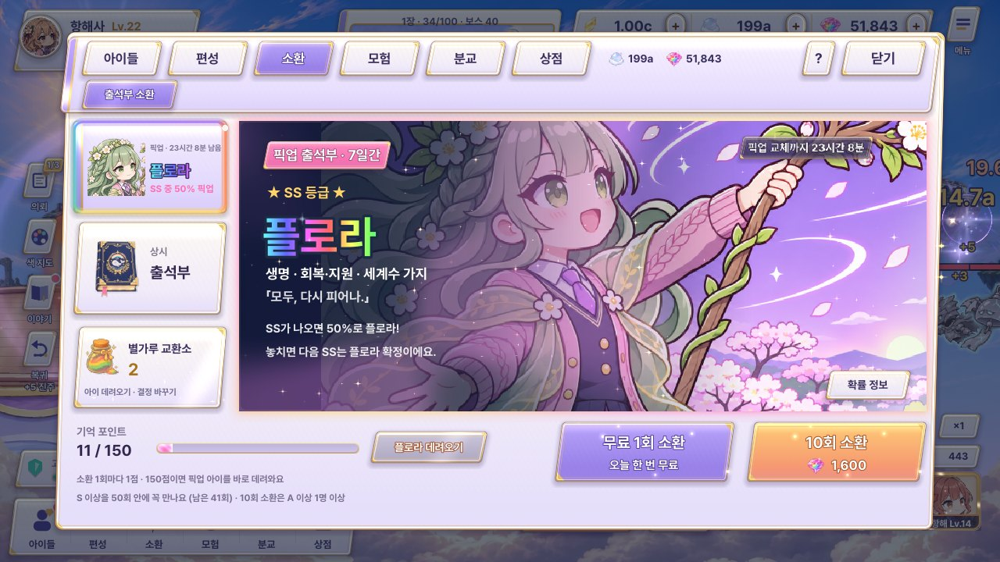
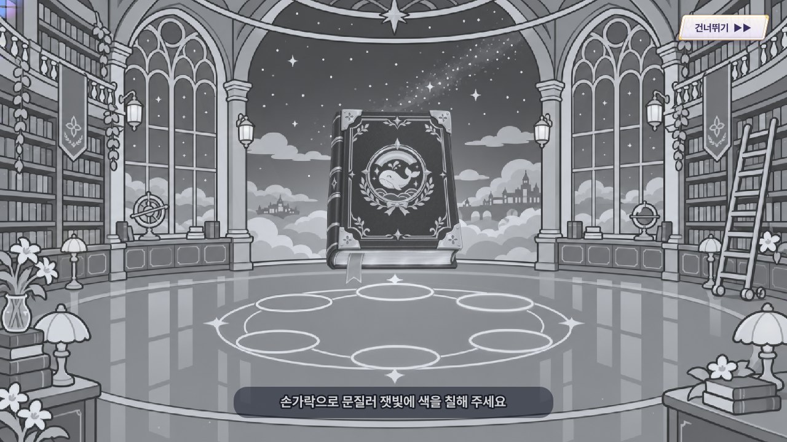
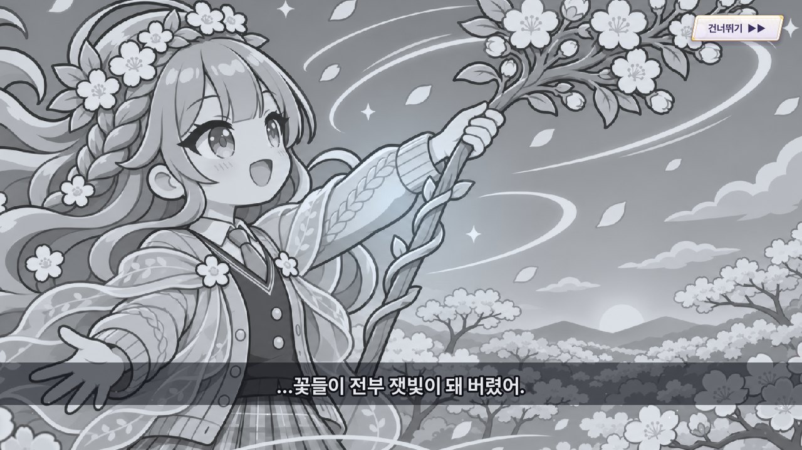
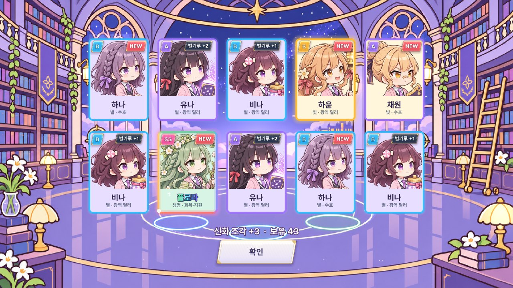

소환 탭 + 소환 흐름 (#22 #23 #24 #25 #26 #27 #39 #40)
위 묶음은 소환 탭 화면(왼쪽 배너 목록 · 픽업 배너 그림 · 첫 10회 안내 · 10회에 신화 조각), 아래 묶음은 뽑은 뒤의 흐름(칠하기 → 등급 예고 → SS 장면 → 결과 · 신화 조각)입니다. 등급 색은 PD 규칙대로 SS = 그 아이의 속성 색(플로라는 생명 초록), 신화 = 무지개입니다. 그림은 게임에 있는 컷인 · 배경을 그대로 썼고, 움직임은 CSS 애니메이션으로 계속 돕니다. 수치 · 날짜는 예시입니다.
지금 게임
배너 아래에 「출석부 소환」 탭 하나만 떠 있고, 10회 소환 버튼이 다른 메뉴와 같은 판입니다. 결과의 신화 조각은 「신화 조각 +3 · 보유 43」 글자 한 줄이고, SS 장면은 잿빛 그림 + 자막입니다.




1. 소환 탭 화면 (#39 배너 목록 · #40 배너 그림 · #22 첫 10회 · #25 신화 조각)
A · 아틀리에 갤러리 — 배너 그림이 주인공
배너를 금빛 액자에 걸린 그림으로 다루고, 왼쪽 목록은 핀으로 꽂은 작은 그림 3장(픽업 · 상시 · 첫 항해), 10회 버튼에는 무지개 신화 조각 딱지가 늘 붙어 있습니다.
소환
플로라
모두, 다시 피어나.

첫 항해
출석부
B · 펼친 출석부 — 이야기(출석부)가 주인공
화면 전체가 펼친 출석부이고, 배너는 책에 꽂힌 책갈피 3개(초록 픽업 · 남색 상시 · 금빛 첫 항해), 소환 버튼은 출석 도장처럼 찍는 밀랍 인장입니다.
소환
플로라
모두, 다시 피어나.
첫 항해
처음 50번, 10번마다 선물
C · 전신 무대 — 아이가 주인공
컷인 그림을 화면 가득 깔고 글은 아래 기운 띠 한 줄만, 배너 목록은 왼쪽 물방울 모양 얼굴 3개로 줄이고, 소환 버튼은 오른쪽 아래 유리 받침에 띄웁니다.
소환
플로라
모두, 다시 피어나.
첫 항해 출석부
10번마다 선물 · 50번째 S 이상
2. 소환 흐름 스토리보드 (#23 칠하기 · #26 등급 연출 · #27 SS 장면 · #24 #25 신화 조각)
가 · 도서관 원 — 지금 무대(도서관)를 그대로 키우기
지금 도서관 바닥의 가운데 원 하나만 칠하고(꾹 누르면 원을 따라 자동), 등급이 오를수록 빛이 커지며 SS는 화면이 완전히 꺼진 뒤 대사 → 속성 색 충격파로 등장, 신화 조각은 결정이 떠올라 오른쪽 위 보유 수로 날아갑니다.
① 칠하기 (#23)원 밖은 칠해지지 않고, 꾹 누르면 흰 고리가 차며 붓이 저절로 돕니다
② 등급마다 커지는 등장 (#26)B 0.5초 · A 1초 · S 1.5초 + 화면 흔들림 · SS는 ③으로
③ SS: 검은 화면 + 대사 (#27)매번 나오고, 오른쪽 위 「건너뛰기」로 바로 ⑤
플로라
④ SS 등장하얗게 터진 뒤 그림이 다가오며 생명 초록 충격파 · 잎 입자 (속성마다 입자 모양이 다름)
⑤ 10회 결과 + 신화 조각 (#24 #25)카드가 다 놓이면 책에서 무지개 결정이 떠올라 「+3」 → 오른쪽 위 보유 칸으로 날아가 숫자가 오름
나 · 이젤 캔버스 — 아틀리에답게 그림을 완성하기
도서관 대신 이젤 위 빈 캔버스 한가운데 동그라미만 칠하고, 등급은 캔버스에 튄 물감 크기로, SS는 검은 캔버스에 대사를 손글씨로 쓴 뒤 속성 물감이 흘러내리며 그림이 드러나고, 결과는 액자 벽 + 무지개 물감 병에 결정이 떨어집니다.
① 칠하기 (#23)칠할 곳은 캔버스 가운데 점선 동그라미 하나
② 등급마다 커지는 물감 (#26)물감 크기 · 액자 색 · 소리로 단계가 바로 보임
③ SS: 검은 캔버스 + 손글씨 대사 (#27)대사가 다 써지면 속성 색 물감이 위에서 흘러내림 · 늘 건너뛰기 가능
플로라
④ SS 등장붓질 한 번이 왼쪽에서 오른쪽으로 쓸며 그림을 칠해 드러냄
⑤ 액자 벽 결과 + 신화 조각 병 (#24 #25)결정이 무지개 물감 병에 떨어지며 병이 차오름 (상점의 신화 조각 교환과 같은 병)